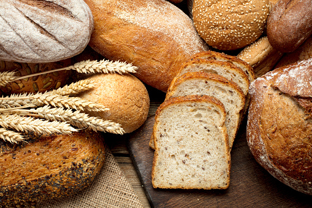

Bread
1. Storage

Fridge temperature: Refrigeration can increase the shelf life of both commercial and homemade bread by 3–5 days

Room temperature: bread typically lasts 3–4 days if it's homemade or up to 7 days if it's store-bought.
2. Characteristics
Provides: starch and fiber
3. Recommended dish: Porchetta Sandwich


a. Ingredient
- 16 slices porchetta
- 8 slices sourdough bread toasted (gluten-free if needed)
- 1 recipe Italian salsa verde, recipe below
Italian Salsa Verde:
- ½ cup Italian parsley, finely minced
- ¼ cup olive oil
- 2 tablespoons capers, finely minced
- 1 clove garlic, grated on a microplane
- ½ lemon, juiced
- 1 pinch EACH: chili flakes and sea salt

b.Instructions
- Begin by mixing the Italian salsa verde ingredients in a small bowl. ½ cup Italian parsley,¼ cup olive oil,2 tablespoons capers, 1 clove garlic,½ lemon,1 pinch EACH: chili flakes and sea salt
- Pile the porchetta on top of 4 slices of the sourdough. Divide the Italian salsa verde between the sandwiches then top with the remaining pieces of bread.
- 8 slices sourdough bread,16 slices porchetta
- Slice the sandwiches in half before serving them.